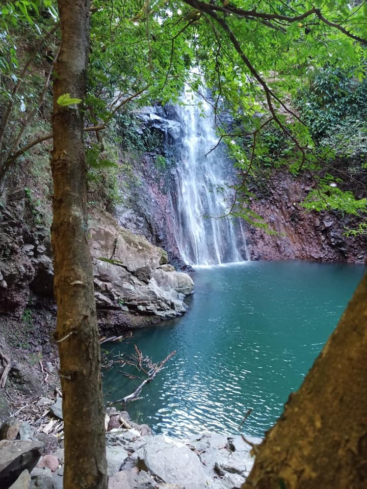
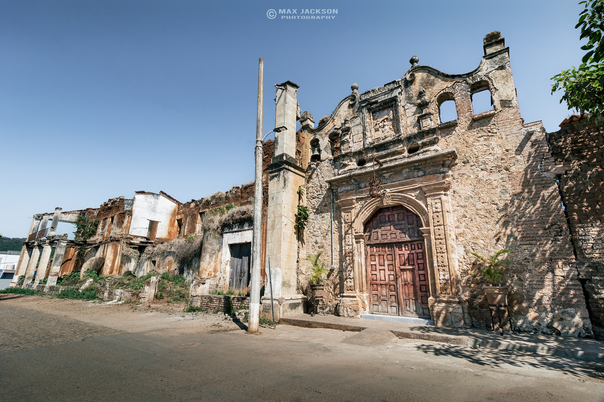
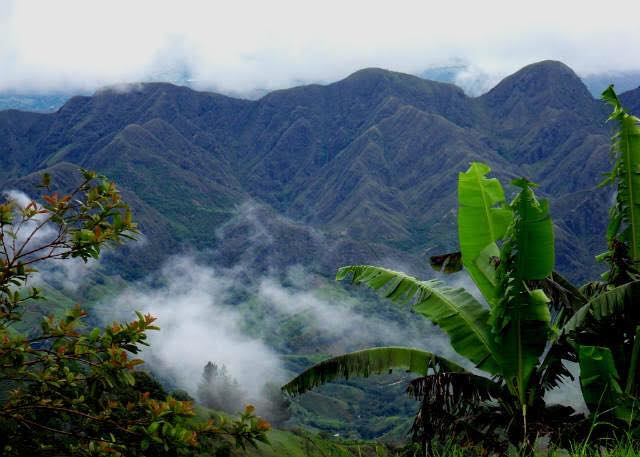

Mazatan
Conocido como “La Tierra del Mezcal”, Mazatlán destaca por su tradición mezcalera y su riqueza cultural. Su nombre proviene del náhuatl “Mazatlán”, que significa “Lugar de venados”, en referencia a la fauna que antiguamente abundaba en la región.
Lugares Destacados
- Parroquia de San Gregorio Magno
- Fabricas artesanales de mezcal
- Plaza principal de Mazatan
- Cerro del Metate
- Río Mezquital
Rutas

Miravalle
Localidad del municipio de Compostela, Nayarit, conocida principalmente por albergar la Ex-Hacienda de Miravalle, uno de los conjuntos históricos más representativos de la región. Miravalle destaca por su valor histórico, su entorno rural y su relación con la actividad agrícola que marcó el desarrollo económico del municipio durante los siglos XIX y principios del XX. El nombre Miravalle hace referencia a su ubicación privilegiada, rodeada de valles y paisajes naturales característicos de la zona central de Nayarit.
Lugares Destacados
- Ex-Hacienda de Miravalle
- Capilla de la Ex-Hacienda
- Casco de la hacienda
- Áreas rurales y agrícolas circundantes
- Paisajes naturales del valle de Compostela
Rutas

Cumbres de Huicicila
Localidad ubicada en el municipio de Compostela, Nayarit, en la zona serrana del municipio. Cumbres de Huicicila se distingue por su entorno natural montañoso, clima fresco y paisajes boscosos, lo que la convierte en una de las áreas con mayor riqueza ecológica de la región. La comunidad forma parte de la Sierra de Vallejo, una zona reconocida por su biodiversidad, tranquilidad y conexión con la naturaleza, ideal para actividades de ecoturismo y turismo rural.
Lugares Destacados
- Bosques de pino y encino
- Miradores naturales de la sierra
- Senderos rurales y caminos de montaña
- Áreas de observación de flora y fauna
- Paisajes naturales de la Sierra de Vallejo